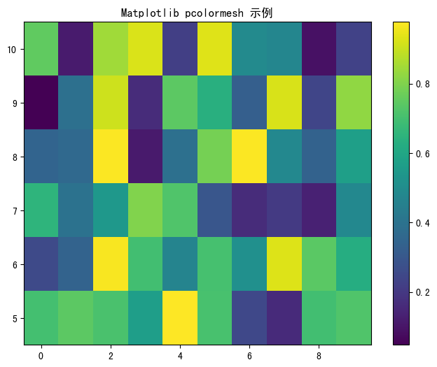
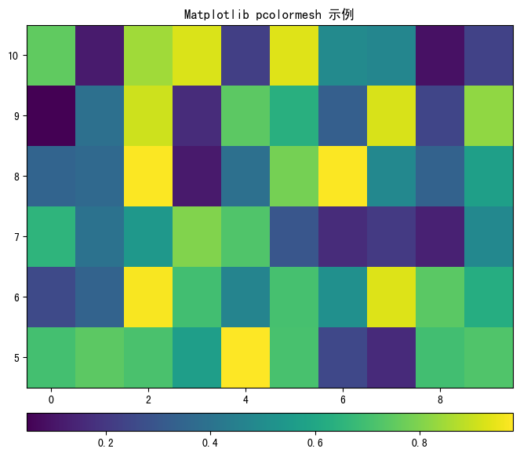
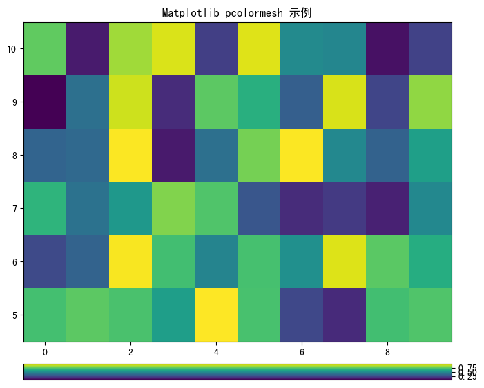

Matplotlib Axes 的位置参数到底如何设置？¶
为了引出这篇文章想说明的问题，我们首先使用 Matplotlib 绘制一个简单的 pcolormesh 示例：
1import os
2import matplotlib as mpl
3import matplotlib.pyplot as plt
4import numpy as np
5
6mpl.use('Agg')
7if os.popen("uname").read().strip() == "Darwin":
8 mpl.rcParams["font.sans-serif"] = ["Arial Unicode MS"] # MacOS
9else:
10 mpl.rcParams["font.sans-serif"] = ["SimHei"] # CentOS, Windows
11mpl.rcParams["axes.unicode_minus"] = False
12
13# 设置随机数种子, 使每次生成的数据集相同
14np.random.seed(19680801)
15
16# 构造数据
17Z = np.random.rand(6, 10)
18x = np.arange(-0.5, 10, 1) # len = 11
19y = np.arange(4.5, 11, 1) # len = 7
20
21# 创建 Figure 和坐标
22fig = plt.figure(figsize=(8, 6))
23ax = fig.add_subplot(111)
24
25# 填色
26img = ax.pcolormesh(x, y, Z)
27
28# 设置标题
29ax.set_title("Matplotlib pcolormesh 示例")
30
31# 绘制 Colorbar
32fig.colorbar(img, orientation='vertical')
33
34# 保存图表
35fig.savefig("test.png", bbox_inches='tight')
36
37# 关闭资源
38plt.cla()
39plt.close(fig)
40plt.close("all")
画出的图是这样的：
现在的 Colorbar 是垂直显示的。如果想要把它改成水平显示的，可以修改第 32 行代码中的 orientation
参数，改为 horizontal ，图片就会变成这样：
这两种位置都是 Matplotlib 内置的默认位置，但实际情况下，我们更希望能够自定义 Colorbar 的位置。 为了达到这一点，我们可以使用手动创建 Axes 的方式来设置 Colorbar。
按照下面的代码修改：
1import os
2import matplotlib as mpl
3import matplotlib.pyplot as plt
4import numpy as np
5
6mpl.use('Agg')
7if os.popen("uname").read().strip() == "Darwin":
8 mpl.rcParams["font.sans-serif"] = ["Arial Unicode MS"] # MacOS
9else:
10 mpl.rcParams["font.sans-serif"] = ["SimHei"] # CentOS, Windows
11mpl.rcParams["axes.unicode_minus"] = False
12
13# 设置随机数种子, 使每次生成的数据集相同
14np.random.seed(19680801)
15
16# 构造数据
17Z = np.random.rand(6, 10)
18x = np.arange(-0.5, 10, 1) # len = 11
19y = np.arange(4.5, 11, 1) # len = 7
20
21# 创建 Figure 和 Axes
22fig = plt.figure(figsize=(8, 6))
23ax = fig.add_subplot(111)
24
25# 填色
26img = ax.pcolormesh(x, y, Z)
27
28# 设置标题
29ax.set_title("Matplotlib pcolormesh 示例")
30
31# 获取当前 Axes 的位置信息
32ax_left, ax_bottom, ax_width, ax_height = ax.get_position().bounds
33
34# 绘制 Colorbar
35cax = plt.axes([ax_left, ax_bottom - ax_height * 0.12, ax_width, ax_height * 0.05]) # type: ignore
36cb = fig.colorbar(img, cax=cax, orientation='horizontal')
37
38# 保存图表
39fig.savefig("test.png", bbox_inches='tight')
40
41# 关闭资源
42plt.cla()
43plt.close(fig)
44plt.close("all")
画出的图是这样的：
通过这种方式，我们就可以自由设置 Colorbar 的 位置 、 高度 、 宽度 等属性了，下面详细解释一下代码。
在 Matplotlib 中， Figure 表示 画布 ， Axes 表示 轴 。
所有的图，不论包含的内容多么丰富，这两个组件一定是最基本的。
我们来看这张图：

这张图展示了一张用 Matplotlib 画出的图的基本骨架，如果忽略那些 Marker、Label、Tick 等元素，其实最基本的就是 Figure 和 Axes。
先来看第 32 行：
1ax_left, ax_bottom, ax_width, ax_height = ax.get_position().bounds
这行代码获取到的四个变量分别为：
Axes 左侧边缘距离画布边缘的归一化距离：0.125
Axes 底部边缘距离画布边缘的归一化距离：0.10999999999999999
Axes 的归一化宽度：0.775
Axes 的归一化高度：0.77
归一化的数值大致相当于百分比。 比如 0.125 表示 Axes 是从 Figure 的 12.5% 处开始画的， 0.109 表示 Axes 底部到 Figure 底部的距离大致是 Figure 的 10.9%， 0.775 表示 Axes 宽度是 Figure 的 77.5%， 0.77 表示 Axes 高度是 Figure 的 77%。
然后再来看代码的第 35 行：
1cax = plt.axes([ax_left, ax_bottom - ax_height * 0.12, ax_width, ax_height * 0.05])
Matplotlib 官网有 plt.axes() 的函数签名。
其中第一个参数就是 rect=[left, bottom, width, height]。通过执行这个函数，我们创建了一个新的 Axes，rect 参数指定了它的位置。
我们在代码离这样写这四个参数：
1ax_left, ax_bottom - ax_height * 0.12, ax_width, ax_height * 0.05
意思是：
新 Axes 的左边和第一个 Axes 对齐。
新 Axes 的底部距离画布的距离，是第一个 Axes 高度的 12%。也就是说在与第一个 Axes 底部对齐的基础上，再向下移动它高度 12% 的距离。
新 Axes 的宽度与第一个 Axes 一致。
新 Axes 的高度是第一个 Axes 高度的 5%。
当创建好新 Axes 后，将它赋值给 colorbar 的 cax 参数，这样 colorbar 就直接在这个新 Axes 中填充了，它的形状就是我们定义的新 Axes 的形状。 如代码第 36 行所示：
1cb = fig.colorbar(img, cax=cax, orientation='horizontal')
所以，如果想要调整 colorbar 的位置，只要按照这个思路，把我们的目标位置转换为计算方式就可以了。
备注
另外还要注意，这四个参数要结合 orientation 来使用，当 colorbar 是垂直或水平时，它的宽度和高度也要相应的变换方向。 如果我们把现在的代码中的方向改为垂直，这样出来的 colorbar 就不对了，如下图：
